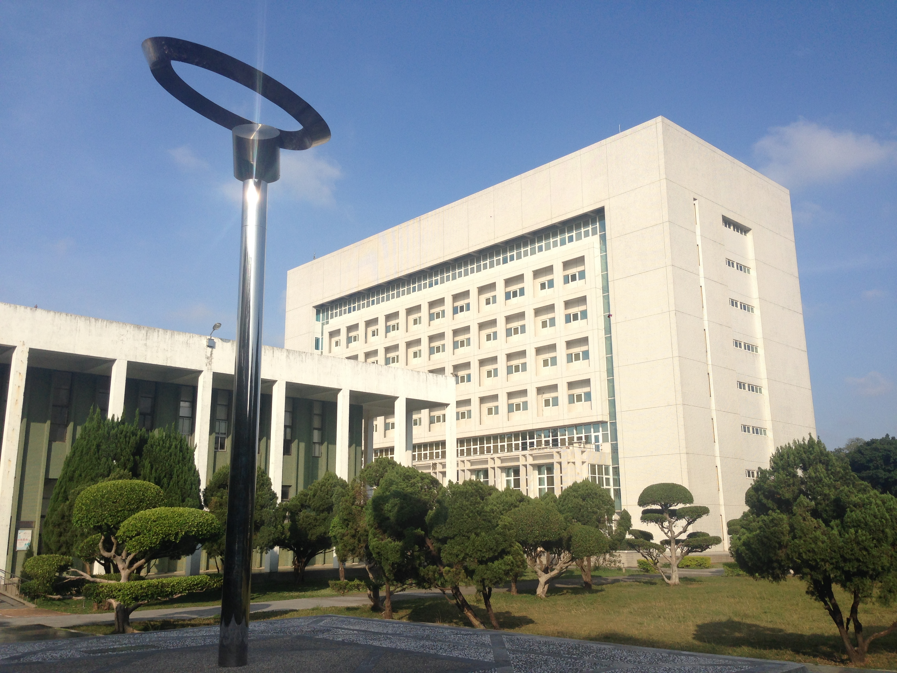
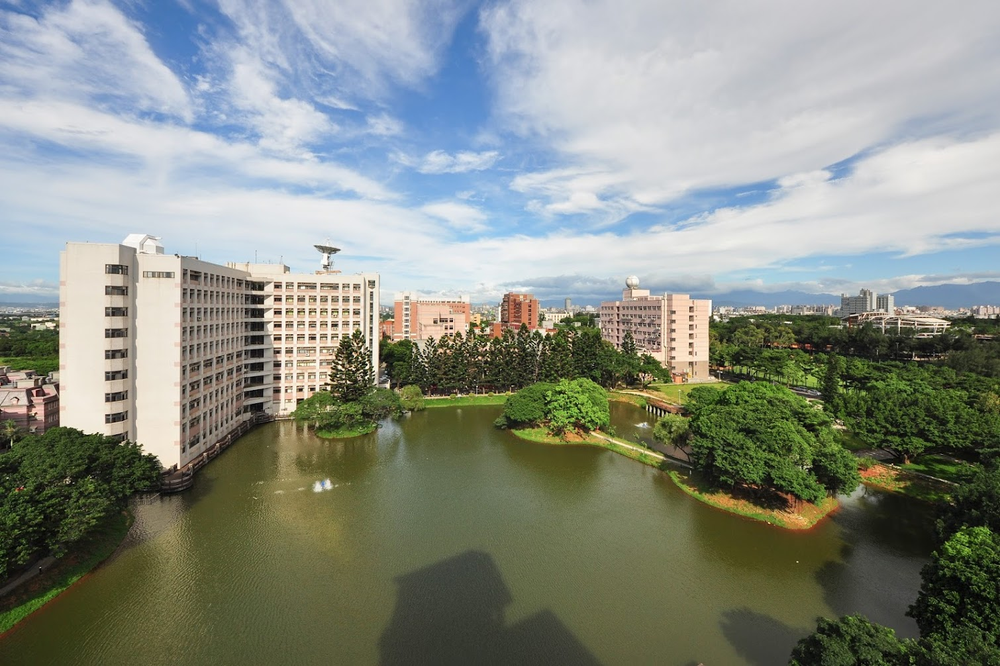
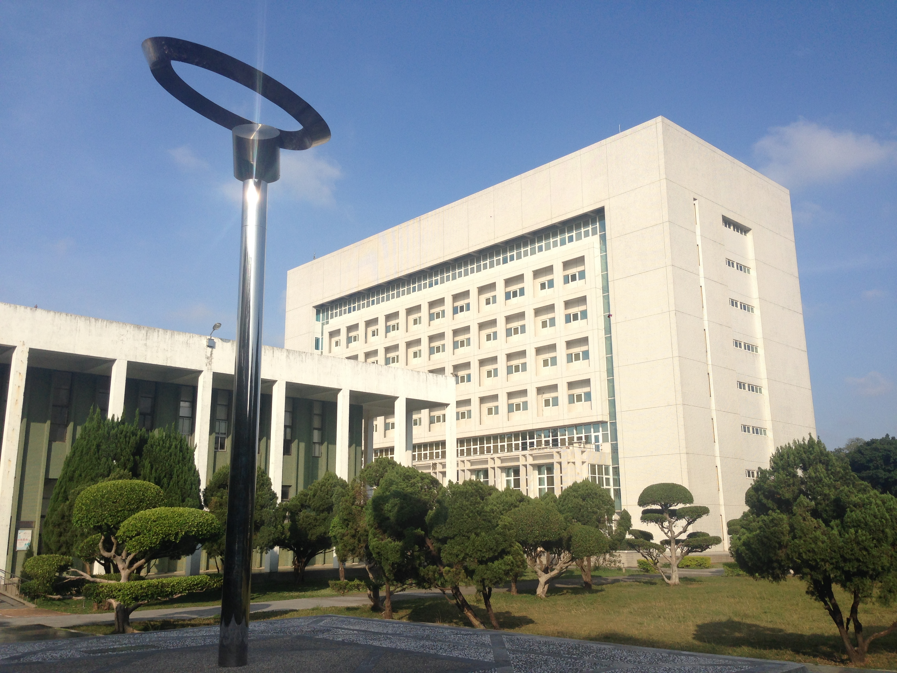
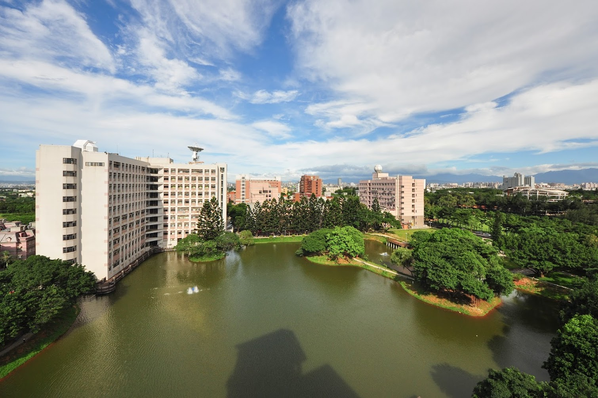

歡迎來到 DIN 的中央大學介紹
探索中央大學的歷史、學術資源與美麗校園！
關於中央大學
國立中央大學（NCU）位於台灣桃園，擁有悠久歷史，涵蓋多個學術領域，並致力於培養優秀人才。
校園環境
中央大學擁有豐富的學習與生活設施，包括圖書館、運動場、學生活動中心等。
 學術資源
學校設有多個學院，如理學院、工學院、電機資訊學院等，並有眾多研究機構。
探索中央大學的歷史、學術資源與美麗校園！
國立中央大學（NCU）位於台灣桃園，擁有悠久歷史，涵蓋多個學術領域，並致力於培養優秀人才。
中央大學擁有豐富的學習與生活設施，包括圖書館、運動場、學生活動中心等。
 學校設有多個學院，如理學院、工學院、電機資訊學院等，並有眾多研究機構。